LỚN NHĨ VÀ PHÌ ĐẠI THẤT TRÊN ĐIỆN TÂM ĐỒ
P Mitrale — ECG
P sinistrocardiale, lớn nhĩ trái (left atrial enlargement), bất thường nhĩ trái (left atrial abnormality), chậm hoạt hoá nhĩ trái (delay of left atrial activation), giãn nhĩ trái (left atrial dilatation), căng giãn nhĩ trái (left atrial distention), quá tải nhĩ trái (left atrial overload)
Sóng P sinh lý
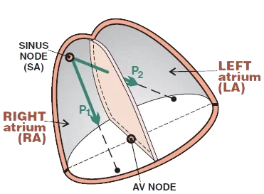
- Xung động (điện thế hoạt động)
- Khởi phát tại nút xoang (SA node) với tần số: 60/phút.
- Sóng khử cực trong các buồng nhĩ
- Lan sang nhĩ phải (P1) và nhĩ trái (P2)
- Tổng hợp (P1 + P2) vector nhĩ
- Hướng từ nút xoang tới nút nhĩ thất (AV node)
- Sóng P là khử cực nhĩ
- Vector nhĩ tổng hợp
- Phải hình dung trong không gian 3 chiều
- Hình bên phải là trong không gian 2 chiều
Hẹp van hai lá và các bất thường nhĩ trái
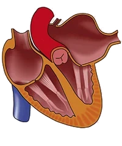
- Hẹp van hai lá
- Gây quá tải áp lực nhĩ trái
- Nhĩ trái bơm máu qua một van hai lá bị hẹp
- Hậu quả là phì đại nhĩ
- Hở van hai lá
- Gây quá tải thể tích nhĩ trái
- Van hai lá đóng không kín
- Trong thì tâm thu thất trái, máu phụt ngược về nhĩ trái
- Hậu quả là quá tải thể tích và giãn nhĩ
- Ở một nhĩ đã giãn, rung nhĩ thường xuất hiện
- Phì đại nhĩ và giãn nhĩ có thể xảy ra đồng thời
- U nhầy nhĩ (atrial myxoma)
- U nhầy là một u lành tính của mô liên kết
- Rất thường gặp ở các buồng nhĩ của tim
P Mitrale và vector nhĩ
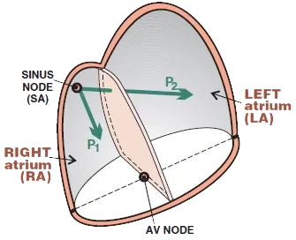
- Hẹp van hai lá
- Là nguyên nhân thường gặp nhất gây tái cấu trúc nhĩ trái
- Nhĩ trái bị lớn ra
- Do đó, vector nhĩ trái (P2) cũng sẽ lớn hơn
- Nhĩ lớn
- Bất kể nguyên nhân (hẹp van, hở van, u nhầy)
- Đều tạo ra một vector (P2) lớn hơn
- Trên điện tâm đồ xuất hiện hình ảnh P mitrale
- Gọi là P mitrale vì nguyên nhân thường gặp nhất là hẹp van hai lá
- Tuy nhiên, điện tâm đồ không phân biệt được nguyên nhân của "lớn nhĩ"
P Mitrale và chuyển đạo II
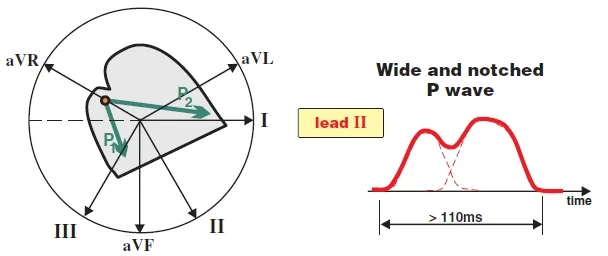
P Mitrale và chuyển đạo II
- Chuyển đạo II "nhìn" các vector nhĩ trên mặt phẳng trán
- Hai buồng nhĩ khử cực tuần tự:
- Trước hết, nhĩ phải (P1) khử cực
- Sau đó, nhĩ trái (P2) khử cực
- Trong P mitrale, quá trình khử cực của nhĩ trái kéo dài hơn
- Vì nhĩ trái bị lớn ra
- Sóng P ở chuyển đạo II sẽ rộng hơn và sẽ có 2 đỉnh (P1 + P2)
- P mitrale chỉ chính sóng P hai đỉnh ở chuyển đạo II này
P Mitrale và chuyển đạo V1
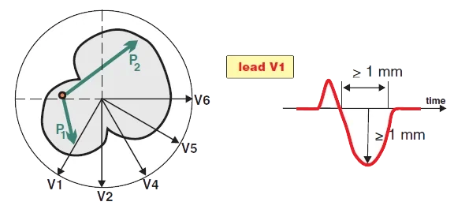
P Mitrale và chuyển đạo V1
- Chuyển đạo V1 "nhìn" các vector nhĩ trên mặt phẳng ngang
- Hai buồng nhĩ khử cực tuần tự:
- Trước hết, nhĩ phải (P1 hướng về phía V1) khử cực
- Sau đó, nhĩ trái (P2 hướng ra xa V1) khử cực
- Trong P mitrale, quá trình khử cực của nhĩ trái kéo dài hơn và vector hướng ra xa V1
- Sóng P sẽ hai pha ở V1
- Và phần thứ hai sẽ sâu (vector P2 nổi trội hơn hướng ra xa V1)
Điện tâm đồ và P Mitrale
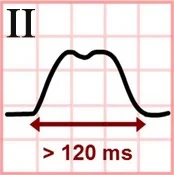
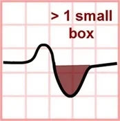
- Nhĩ trái lớn
- Bất kể nguyên nhân (phì đại, giãn, u nhầy)
- Đều tạo ra hình ảnh P Mitrale
- Sóng P được đánh giá ở các chuyển đạo II và V1
- Vì chúng "nhìn" hai buồng nhĩ từ góc tốt nhất
- Chuyển đạo II (P Mitrale)
- Sóng P hai đỉnh (giống chữ M), khoảng cách giữa hai đỉnh > 40ms
- Bề rộng sóng P > 120ms
- Sóng P "hai đỉnh" đặc trưng này ở chuyển đạo II được gọi là P Mitrale
- Chuyển đạo V1 (P Mitrale)
- Phần âm tận cùng sâu > 1mm
- Diện tích phần tận cùng > 1 ô nhỏ
- Bề rộng phần âm tận cùng > 40ms
Sóng P bình thường và P Mitrale
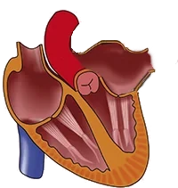
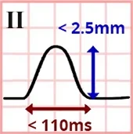
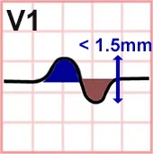
Sóng P bình thường
- Với một sóng P bình thường, hai buồng nhĩ không lớn
- Đánh giá ở các chuyển đạo II và V1
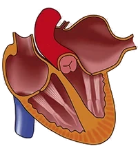
P Mitrale
- Khi nhĩ trái lớn (thường gặp nhất là do phì đại từ hẹp van hai lá)
- P mitrale hình thành
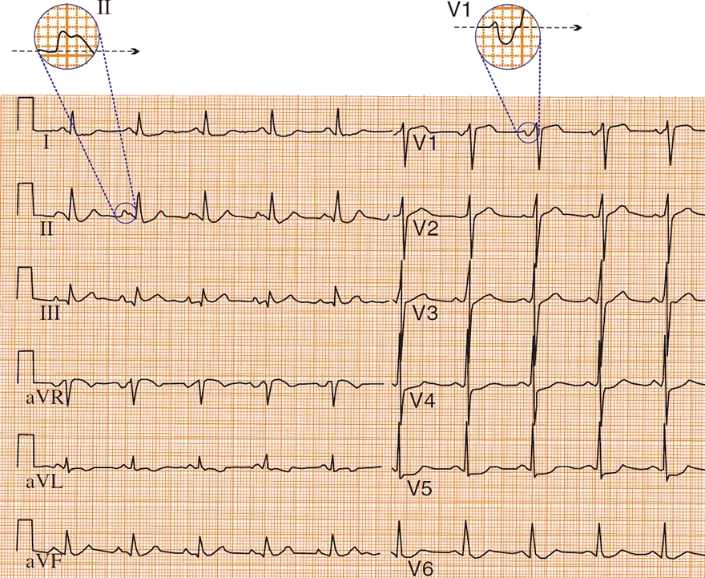
P Mitrale
- Chuyển đạo II
- Sóng P hai đỉnh (M)
- Khoảng cách giữa hai đỉnh > 40ms
- Bề rộng sóng P > 110ms
- Sóng P hai đỉnh (M)
- Chuyển đạo V1
- Phần âm tận cùng sâu > 1mm
- Diện tích phần tận cùng > 1 ô nhỏ
- Bề rộng phần âm tận cùng > 40ms
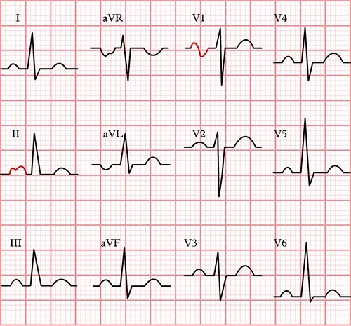
P Mitrale
- Chuyển đạo II
- Sóng P hai đỉnh (M)
- Khoảng cách giữa hai đỉnh > 40ms
- Bề rộng sóng P > 110ms
- Sóng P hai đỉnh (M)
- Chuyển đạo V1
- Phần âm tận cùng sâu > 1mm
- Diện tích phần tận cùng > 1 ô nhỏ
- Bề rộng phần âm tận cùng > 40ms
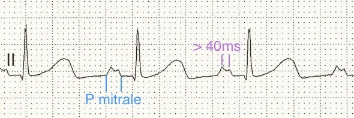
P Mitrale
- Trên điện tâm đồ, chuyển đạo II
- Sóng P hai đỉnh (M)
- Sóng P rộng hơn 110ms
- Khoảng cách giữa hai đỉnh > 40ms
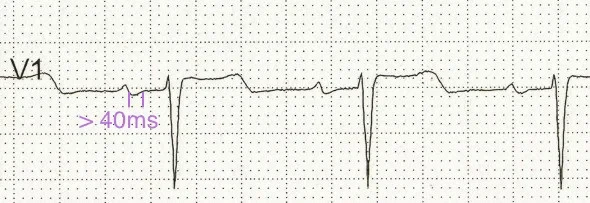
P Mitrale
- Trên điện tâm đồ, chuyển đạo V1
- Sóng P hai pha
- Phần tận cùng của sóng P > 40ms
- Phần tận cùng không sâu quá 1mm
- Diện tích phần tận cùng < 1 ô nhỏ
- Nhưng nếu các tiêu chuẩn khác được thoả ở chuyển đạo II, thì vẫn là P Mitrale
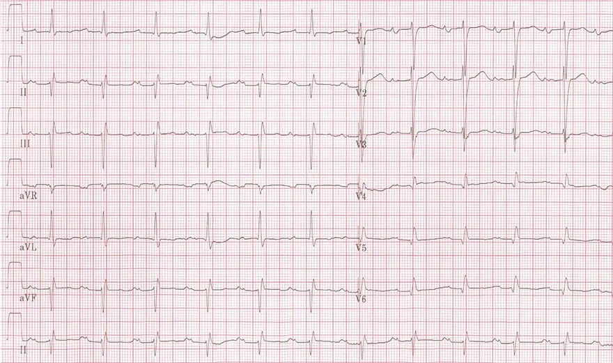
P Mitrale
- Chuyển đạo II
- Sóng P hai đỉnh
- Khoảng cách giữa hai đỉnh > 40ms
- Bề rộng sóng P > 110ms
- Sóng P hai đỉnh
- Chuyển đạo V1
- Phần âm tận cùng sâu > 1mm
- Diện tích phần tận cùng > 1 ô nhỏ
- Bề rộng sóng âm tận cùng > 40ms
P Pulmonale — ECG
P dextrocardiale, phì đại nhĩ phải (right atrial hypertrophy), bất thường nhĩ phải (right atrial abnormality), chậm hoạt hoá nhĩ phải (delay of right atrial activation), giãn nhĩ phải (right atrial dilatation), căng giãn nhĩ phải (right atrial distention), quá tải nhĩ phải (right atrial overload)
Sóng P sinh lý
- Xung động (điện thế hoạt động)
- Khởi phát tại nút xoang (SA node) với tần số: 60/phút.
- Sóng khử cực trong các buồng nhĩ
- Lan sang bên phải (P1) và sang bên trái (P2) của nhĩ
- Tổng hợp (P1 + P2) vector nhĩ
- Hướng từ nút xoang tới nút nhĩ thất (AV node)
- Sóng P biểu diễn khử cực nhĩ
- Vector nhĩ tổng hợp
- Phải hình dung trong không gian 3 chiều
- Hình bên phải là trong không gian 2 chiều
Tâm phế mạn và các bất thường nhĩ phải
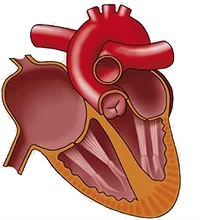
- Tăng áp động mạch phổi
- Thường gặp nhất trong các bệnh phổi (COPD — bệnh phổi tắc nghẽn mạn tính)
- Dẫn tới phì đại tim phải (cả nhĩ và thất)
- Tình trạng này được gọi là tâm phế mạn (cor pulmonale)
- Hẹp van ba lá
- Gây quá tải áp lực nhĩ phải
- Nhĩ phải bơm máu qua một van ba lá bị hẹp
- Dẫn tới phì đại nhĩ phải
- Hở van ba lá
- Gây quá tải thể tích nhĩ phải
- Trong thì tâm thu của thất phải, máu phụt ngược về nhĩ phải
- Dẫn tới giãn nhĩ phải
- U nhầy nhĩ (atrial myxoma)
- U nhầy là một u lành tính của mô liên kết
- Rất thường gặp ở các buồng nhĩ của tim
P Pulmonale và vector nhĩ
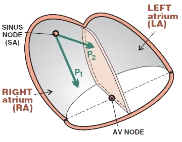
- Tâm phế mạn
- Là nguyên nhân thường gặp nhất gây tái cấu trúc nhĩ phải
- Nhĩ phải bị lớn ra
- Do đó, vector nhĩ phải (P1) cũng sẽ lớn hơn
- Nhĩ lớn
- Bất kể nguyên nhân (tâm phế mạn, hở van, u nhầy)
- Cũng đều tạo ra một vector (P1) lớn hơn
- Trên điện tâm đồ xuất hiện hình ảnh P Pulmonale
- Gọi là P Pulmonale, vì nguyên nhân thường gặp nhất là tâm phế mạn
- Điện tâm đồ không phân biệt được nguyên nhân của "lớn nhĩ"
P Pulmonale và chuyển đạo II
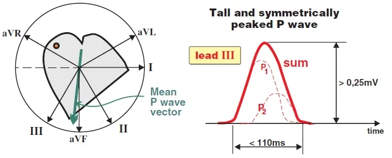
P Pulmonale và chuyển đạo II
- Chuyển đạo II "nhìn" vector nhĩ tổng hợp (P1 + P2) trên mặt phẳng trán
- Hai buồng nhĩ khử cực tuần tự:
- Trước hết, nhĩ phải khử cực (P1)
- Sau đó nhĩ trái khử cực (P2)
- Hình cho thấy vector nhĩ tổng hợp (P1 + P2), định hướng về phía nhĩ phải (P1)
- Trong P Pulmonale, quá trình khử cực của nhĩ phải kéo dài hơn
- Vì nhĩ phải bị lớn ra
- Sóng P ở chuyển đạo II sẽ cao
- Quá trình khử cực của nhĩ phải lớn hơn (P1) chồng lên quá trình khử cực của nhĩ trái nhỏ hơn (P2)
- P Pulmonale chỉ chính sóng P cao ở chuyển đạo II này
P Pulmonale và chuyển đạo V1
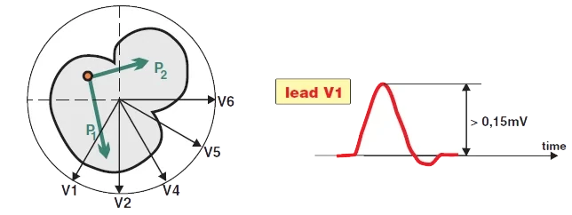
P Pulmonale và chuyển đạo V1
- Chuyển đạo V1 "nhìn" các vector nhĩ trên mặt phẳng ngang
- Hai buồng nhĩ khử cực tuần tự:
- Trước hết, nhĩ phải khử cực (vector P1 nổi trội hơn hướng về phía V1)
- Sau đó nhĩ trái khử cực (P2 hướng ra xa V1)
- Trong P Pulmonale, quá trình khử cực của nhĩ phải kéo dài hơn và vector P1 hướng về phía V1
- Sóng P sẽ hai pha ở V1, vì:
- P1 hướng về phía V1
- P2 hướng ra xa V1
- Vector P1 nổi trội hơn
- Do đó, phần đầu của sóng P hai pha sẽ cao
Điện tâm đồ và P Pulmonale
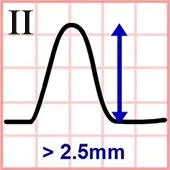
- Nhĩ phải lớn
- Bất kể nguyên nhân (phì đại, giãn, u nhầy)
- Đều tạo ra hình ảnh P Pulmonale
- Sóng P được đánh giá ở các chuyển đạo II và V1
- Vì các chuyển đạo này "nhìn" hai buồng nhĩ từ góc tốt nhất
- Chuyển đạo II (P Pulmonale)
- Biên độ > 2,5mm
- Sóng P "cao" này ở chuyển đạo II được gọi riêng là P Pulmonale
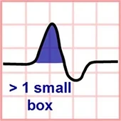
- Chuyển đạo V1 (P Pulmonale)
- Phần dương đầu tiên > 1,5mm
- Diện tích phần đầu tiên > 1 ô nhỏ
Sóng P bình thường và P Pulmonale
Sóng P bình thường
- Với một sóng P bình thường, hai buồng nhĩ không lớn
- Đánh giá ở các chuyển đạo II và V1
P Pulmonale
- Trong trường hợp nhĩ phải lớn (thường gặp nhất là do phì đại nhĩ phải đi kèm tâm phế mạn)
- Kết quả là P pulmonale
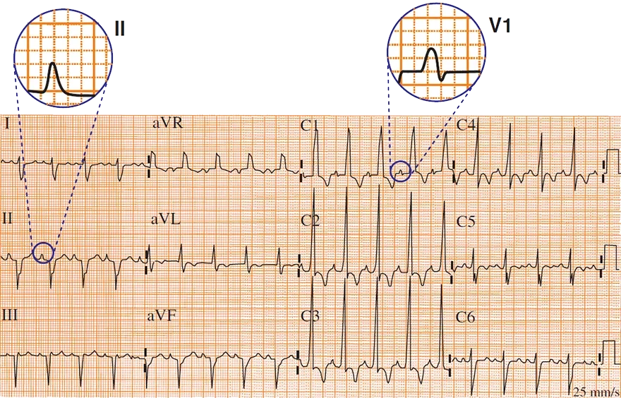
P Pulmonale
- Chuyển đạo II
- Sóng P cao
- Biên độ > 2,5mm
- Chuyển đạo V1
- Phần đầu của sóng P > 1,5mm (biên độ)
- Diện tích phần đầu > 1 ô nhỏ
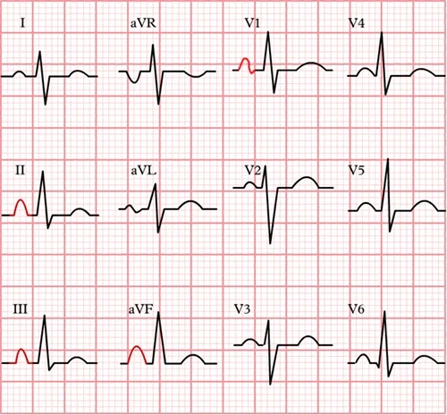
P Pulmonale
- Chuyển đạo II
- Sóng P cao (cũng thấy ở các chuyển đạo dưới khác là III, aVF)
- Biên độ > 2,5mm
- Chuyển đạo V1
- Phần đầu của sóng P > 1,5mm (biên độ)
- Diện tích phần đầu > 1 ô nhỏ
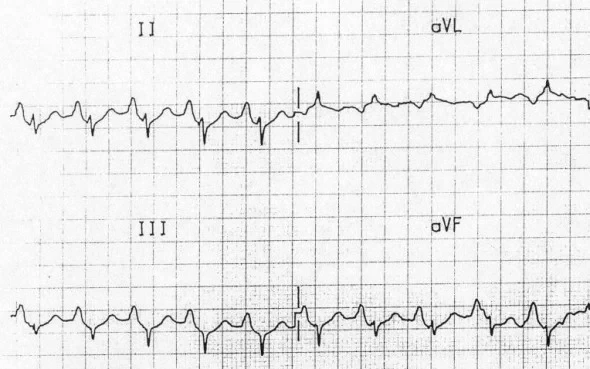
P Pulmonale
- Biên độ sóng P > 2,5mm ở chuyển đạo II (cũng thấy ở các chuyển đạo dưới khác là III, aVF)
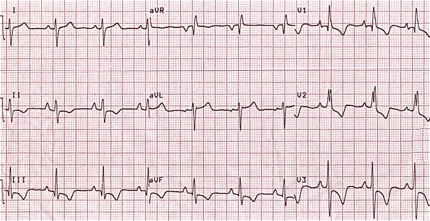
Tâm phế mạn (P Pulmonale + phì đại thất phải)
- P Pulmonale
- Biên độ ở chuyển đạo II > 2,5mm
- Biên độ nửa đầu của sóng P ở V1 > 1,5mm
- Phì đại thất phải
- R ưu thế ở V1 (> 7mm, tỉ lệ R/S > 1)
- Trục lệch phải (+ 150º)
- Block nhánh phải không hoàn toàn
- Quá tải thất phải
- ST chênh xuống kiểu đi xuống và sóng T âm (V1-V3) và (II, III, aVF)
P Cardiale — ECG
P cardiale, P biatriale, lớn (phì đại) hai nhĩ (biatrial enlargement — hypertrophy)
Sóng P sinh lý
- Xung động (điện thế hoạt động)
- Khởi phát tại nút xoang (SA node) với tần số 60/phút.
- Sóng khử cực trong các buồng nhĩ
- Lan sang nhĩ phải (P1) và nhĩ trái (P2)
- Tổng hợp (P1 + P2) vector nhĩ
- Hướng từ nút xoang tới nút nhĩ thất (AV node)
- Sóng P là khử cực của hai buồng nhĩ
- Vector nhĩ tổng hợp
- Phải hình dung trong không gian 3 chiều
- Hình bên phải là trong không gian 2 chiều
Phì đại hai nhĩ
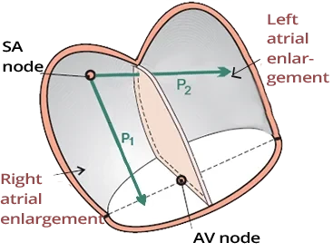
- Đôi khi các thuật ngữ được dùng là:
- P cardiale, P biatriale
- Đây là sự kết hợp của P mitrale + P pulmonale
- Cả hai buồng nhĩ đều lớn
- Bất kể nguyên nhân (phì đại, giãn, u nhầy)
- Không nhất thiết chỉ là phì đại (như tên gọi có thể gợi ý)
- Cả hai vector (P1 và P2) đều lớn
- Vector nhĩ tổng hợp cũng lớn
Điện tâm đồ và phì đại hai nhĩ
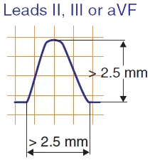
- Hai buồng nhĩ lớn
- Bất kể nguyên nhân (phì đại, giãn, u nhầy)
- Tạo ra hình ảnh điện tâm đồ được gọi là phì đại hai nhĩ
- Trên điện tâm đồ, hình ảnh này biểu hiện dưới dạng P mitrale + P pulmonale
- Chuyển đạo II (phì đại hai nhĩ)
- Biên độ > 2,5mm
- Thời gian > 120ms
- Sóng P có thể một pha/hai pha (M)
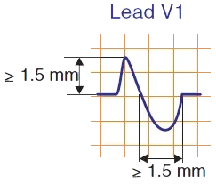
- Chuyển đạo V1 (phì đại hai nhĩ)
- Hai pha
- Biên độ ≥ 1,5mm (của sóng thứ nhất)
- Thời gian ≥ 1,5mm (của sóng thứ hai)
P Mitrale
- Chuyển đạo II
- Sóng P hai pha (M)
- Khoảng cách giữa hai đỉnh > 40ms
- Bề rộng sóng P > 110ms
- Sóng P hai pha (M)
- Chuyển đạo V1
- Phần âm tận cùng sâu > 1mm
- Diện tích phần tận cùng > 1 ô nhỏ
- Bề rộng sóng âm tận cùng > 40ms
- Trên điện tâm đồ, quan sát thấy P mitrale
(phì đại nhĩ trái)- Chưa thoả các tiêu chuẩn của phì đại hai nhĩ
P Pulmonale
- Chuyển đạo II
- Sóng P cao
- Biên độ > 2,5mm
- Chuyển đạo V1
- Phần đầu của sóng P > 1,5mm (biên độ)
- Diện tích phần đầu > 1 ô nhỏ
- Trên điện tâm đồ, quan sát thấy P pulmonale
(phì đại nhĩ phải)- Chưa thoả các tiêu chuẩn của phì đại hai nhĩ
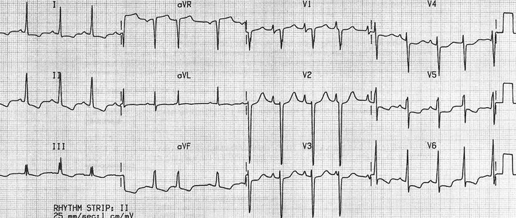
Phì đại hai nhĩ
- Chuyển đạo V1 (sóng P)
- Biên độ dương > 1,5mm (P pulmonale)
- Biên độ âm > 1mm (P mitrale)
- Bệnh nhân biểu hiện dấu hiệu của P mitrale và P pulmonale trên chuyển đạo V1
- Chuyển đạo II không thoả tiêu chuẩn phì đại hai nhĩ (biên độ sóng P > 2,5mm và bề rộng > 120ms)
- Để chẩn đoán phì đại hai nhĩ, chỉ cần hình ảnh điện tâm đồ ở một trong hai chuyển đạo V1 hoặc II
- Bệnh nhân có bệnh cơ tim giãn
- Phì đại thất trái
- Chỉ số Sokolow dương tính: S (V2) + R (V6) > 35mm
- Quá tải thất trái
- ST chênh xuống (I, II, V5, V6)
- Phì đại thất trái
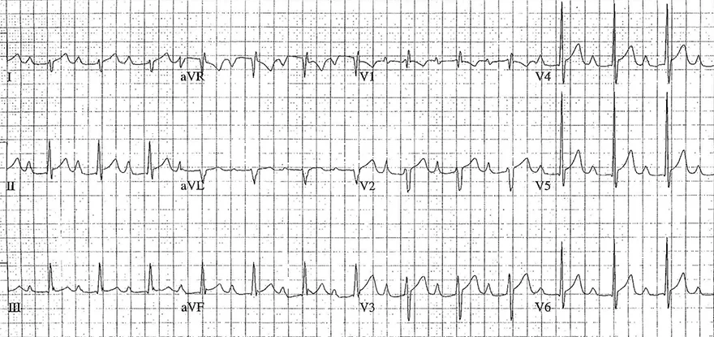
Phì đại hai nhĩ
- Chuyển đạo II (sóng P)
- Biên độ > 2,5mm (P pulmonale)
- Bề rộng > 120ms (P mitrale)
- Chuyển đạo V1 (sóng P)
- Biên độ dương > 1,5mm ở V2 (P pulmonale)
- Đôi khi đánh giá chuyển đạo V2 thay cho V1 (hai chuyển đạo V1 và V2 nằm sát nhau)
- Biên độ âm > 1mm (P mitrale)
- Biên độ dương > 1,5mm ở V2 (P pulmonale)
- Bệnh nhân có phì đại hai nhĩ
- Thoả tiêu chuẩn của cả P mitrale lẫn P pulmonale
Phì đại thất trái (LVH) — ECG
Phì đại thất trái (left ventricular hypertrophy)
Thất trái
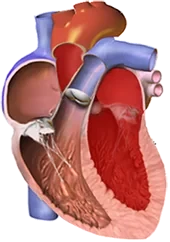
- Thất trái có bề dày sinh lý 10-12mm
- Quá tải huyết động của tâm thất (thể tích hoặc áp lực) gây tái cấu trúc tâm thất
- Phì đại thất trái
- Là dày thành > 12mm
- Thành thất trái có bề dày sinh lý 10-12mm
- Phì đại thất phải
- Là dày thành > 5mm
- Thành thất phải có bề dày sinh lý 3-4mm
- Phì đại thất trái
- Theo kiểu quá tải huyết động, phân biệt 2 loại phì đại:
- Phì đại đồng tâm (concentric)
- Phì đại lệch tâm (excentric)
Phì đại thất trái đồng tâm
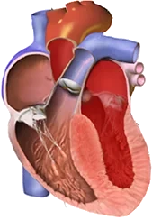
- Tâm thất bị quá tải áp lực (tăng hậu gánh)
- Tâm thất bơm máu chống lại một áp lực cao hơn
- Xảy ra phì đại mà không giãn buồng thất
- Phì đại thất trái đồng tâm phát sinh khi có quá tải tâm thu của thất trái:
- Tăng huyết áp động mạch
- Hẹp van động mạch chủ
- Phì đại thất phải đồng tâm xảy ra khi có quá tải tâm thu của thất phải:
- Tăng áp động mạch phổi (bệnh phổi tắc nghẽn mạn tính)
Phì đại thất trái lệch tâm
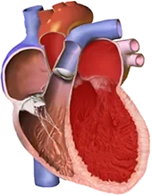
- Tâm thất bị quá tải thể tích (tăng tiền gánh)
- Buồng thất bị đổ đầy máu trong thì tâm trương
- Trong thì tâm thu, nó bị quá tải áp lực
(bơm một thể tích máu lớn hơn)
- Xảy ra giãn và phì đại buồng thất
- Với quá tải thể tích mạn tính, chỉ xảy ra giãn
- Phì đại thất trái lệch tâm, do:
- Hở van động mạch chủ
- Phì đại thất phải lệch tâm, do:
- Hở van động mạch phổi
Vector thất chính và phì đại tâm thất
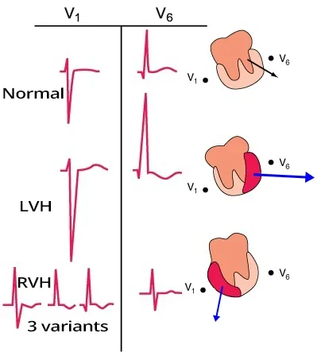
- Vector thất chính được "quan sát" tốt nhất ở
- Các chuyển đạo trước ngực (V1 và V6)
- Phì đại tâm thất được thấy trên điện tâm đồ
- Rõ nhất ở các chuyển đạo (V1 và V6)
- Phì đại thất trái (LVH)
- Vector tim xoay về phía phì đại thất trái
- Vì thất trái bị lớn ra (LVH)
- Vector hướng gần như thẳng
- Về phía chuyển đạo V6
- Ra xa chuyển đạo V1
- Do đó sẽ có biên độ phức bộ QRS lớn hơn
- Vector tim xoay về phía phì đại thất trái
- Phì đại thất phải (RVH)
- Vector tim xoay về phía phì đại thất phải
- Vector nhỏ hơn vì thất phải nhỏ hơn thất trái
- Vector hướng gần như thẳng
- Về phía chuyển đạo V1
- Ra xa chuyển đạo V6
- Biên độ QRS sẽ nhỏ hơn
Phì đại thất trái
- Điện tâm đồ không phân biệt được phì đại đồng tâm với phì đại lệch tâm
- Điện tâm đồ trong chẩn đoán phì đại thất trái có:
- Độ nhạy thấp (20-50%)
- Nhiều bệnh nhân có phì đại nhưng điện tâm đồ bình thường (âm tính giả)
- Độ đặc hiệu cao (90%)
- Nếu bệnh nhân có dấu hiệu phì đại trên điện tâm đồ, thì rất có khả năng có phì đại
- Độ nhạy thấp (20-50%)
- Chẩn đoán phì đại được thực hiện bằng siêu âm tim
- Nguyên lý chẩn đoán LVH trên điện tâm đồ là vector tim xoay:
- Về phía các chuyển đạo bên (I, aVL, V5-V6)
- Sinh ra sóng R cao
- Ra xa các chuyển đạo bên phải (aVR, III, V1-V2)
- Sinh ra sóng S sâu
- Về phía các chuyển đạo bên (I, aVL, V5-V6)
Điện tâm đồ và phì đại thất trái
- Chỉ số Sokolow: S(V1/2) + R(V5/6) ≥ 35mm
- Chỉ số Lewis: I(R) + III(S) > 25mm
- aVL(R) ≥ 11mm
- aVL(R) ≥ 13mm và III(S) ≥ 25mm
- Thời gian sóng R kéo dài (V6) ≥ 50ms
- Quá tải thất trái
- ST chênh xuống kiểu đi xuống ở các chuyển đạo bên (V5-V6, I, aVL)
- Các biến đổi thứ phát trên điện tâm đồ:
- P mitrale (phì đại nhĩ trái) (trong quá tải huyết động thất trái, nhĩ trái cũng bị quá tải)
- Trục lệch trái
- ST chênh lên nghịch hướng (V1-V3)
- Các vấn đề của chẩn đoán bằng điện tâm đồ:
- Người béo phì có điện thế điện tâm đồ giảm vì mỡ hoạt động như một chất cách điện
- Bệnh nhân nhồi máu thành bên có thể có sóng R giảm, làm sai lệch các tiêu chuẩn điện thế
- Bệnh nhân thể trạng gầy (asthenic) cho kết quả dương tính giả. Họ có dấu hiệu phì đại trên điện tâm đồ nhưng không có phì đại
- Block nhánh trái
- Có thể biểu hiện với hình ảnh tương tự phì đại thất trái
- Bệnh nhân thường có cả phì đại lẫn block nhánh trái
Chỉ số Sokolow
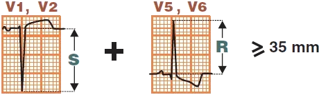
- S(V1/2) + R(V5/6) ≥ 35mm
- Là tiêu chuẩn được dùng phổ biến nhất
- Chỉ số Cornell
- Nhạy hơn chỉ số Sokolow
- Ít được ghi nhớ hơn (thường không được dùng)
- Nam: R(aVL) + S(V3) > 28mm
- Nữ: R(aVL) + S(V3) > 20mm
- Cornell Product Duration
- Có độ nhạy cao nhất
- Ít được ghi nhớ hơn (thường không được dùng)
- Chỉ số Cornell (mm) x thời gian QRS (ms) > 2440 mm.ms
Chỉ số Lewis
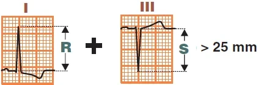
- I(R) + III(S) > 25mm
aVL(R) ≥ 11mm
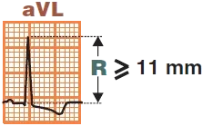
- aVL(R) ≥ 11mm
- Dùng trong trường hợp trục tim bình thường
aVL(R) ≥ 13mm và III(S) ≥ 15mm
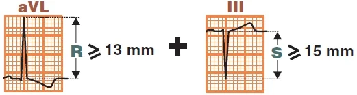
- aVL(R) ≥ 13mm và III(S) ≥ 15mm
- Dùng trong trường hợp trục lệch trái
Thời gian đạt đỉnh sóng R (V6) kéo dài ≥ 50ms
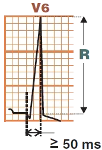
- Khoảng thời gian từ khởi đầu phức bộ QRS tới đỉnh sóng R được gọi là:
- Thời gian đạt đỉnh sóng R (R Wave Peak Time — Intrinsicoid Deflection)
- Thời gian đạt đỉnh sóng R (V6) kéo dài ≥ 50ms
- Gặp trong phì đại thất trái
- Trong phì đại, thời gian hoạt hoá thành tim kéo dài
- Do đó, khoảng cách giữa:
- Khởi đầu của phức bộ QRS (bắt đầu hoạt hoá thất)
- Và đỉnh của sóng R (kết thúc khử cực của thất trái)
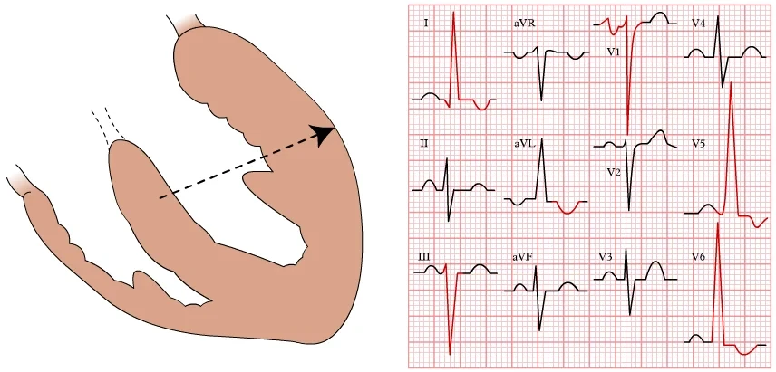
Phì đại thất trái
- Chỉ số Sokolow
- S(V1/2) + R(V5/6) ≥ 35mm
- Chỉ số Lewis
- I(R) + III(S) > 25mm
- aVL(R) ≥ 11mm
- Thời gian đạt đỉnh sóng R (V6) kéo dài ≥ 50ms
Quá tải thất trái và phì đại đồng tâm thất trái
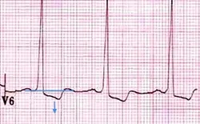
Hình ảnh tăng gánh thất trái (left ventricular strain pattern)
- Chỉ được tạo ra bởi phì đại đồng tâm thất trái (quá tải áp lực)
- Không phải phì đại lệch tâm thất trái (quá tải thể tích)
- ST chênh xuống kiểu đi xuống ở các chuyển đạo bên (I, aVL, V5-6)
- Xảy ra do tái cực kéo dài
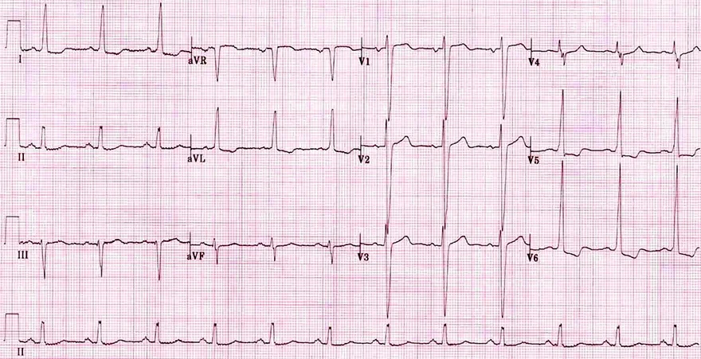
Phì đại thất trái
- Chỉ số Sokolow dương tính
- S(V1/2) + R(V5/6) ≥ 35mm
- aVL(R) ≥ 11mm
- Quá tải thất trái
- ST chênh xuống kiểu đi xuống ở các chuyển đạo bên (V5-V6, I, aVL)
- Nhiều khả năng là phì đại đồng tâm thất trái
- Thời gian đạt đỉnh sóng R (V6) kéo dài ≥ 50ms
- P mitrale (phì đại nhĩ trái)
- Chẩn đoán xác định bằng siêu âm tim
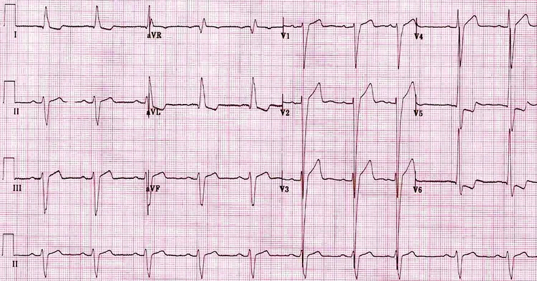
Phì đại thất trái
- Sóng S và R lớn ở các chuyển đạo trước tim, lan sang cả các chuyển đạo lân cận
- Chỉ số Sokolow dương tính
- S(V1/2) + R(V5/6) ≥ 35mm
- Trục lệch trái
- aVL(R) ≥ 13mm và III(S) ≥ 15mm
- Quá tải thất trái
- ST chênh xuống kiểu đi xuống ở các chuyển đạo bên (V5-V6, I, aVL)
- Nhiều khả năng là phì đại đồng tâm thất trái
- ST chênh lên nghịch hướng (V1-3)
- Thời gian đạt đỉnh sóng R (V6) kéo dài ≥ 50ms
- Chẩn đoán xác định bằng siêu âm tim
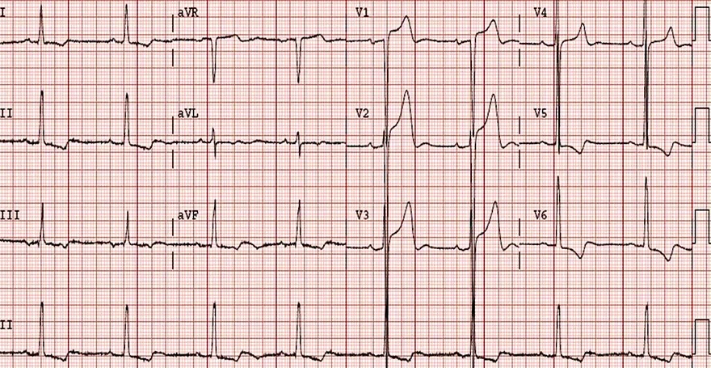
Phì đại thất trái
- Sóng S và R lớn ở các chuyển đạo trước tim, lan sang cả các chuyển đạo lân cận
- Chỉ số Sokolow dương tính
- S(V1/2) + R(V5/6) ≥ 35mm
- Quá tải thất trái
- ST chênh xuống kiểu đi xuống ở các chuyển đạo bên (V5-V6, I)
- Nhiều khả năng là phì đại đồng tâm thất trái
- ST chênh lên nghịch hướng (V1-3)
- Thời gian đạt đỉnh sóng R (V6) kéo dài ≥ 50ms
- Chẩn đoán xác định bằng siêu âm tim
Phì đại thất phải (RVH) — ECG
Phì đại thất phải (right ventricular hypertrophy)
Thất phải
- Thất phải có bề dày sinh lý 3-4mm
- Quá tải huyết động của tâm thất (thể tích, áp lực) gây tái cấu trúc tâm thất
- Phì đại thất phải
- Là dày thành > 5mm
- Thành thất phải có bề dày sinh lý 3-4mm
- Phì đại thất trái
- Là dày thành > 12mm
- Thành thất trái có bề dày sinh lý 10-12mm
- Phì đại thất phải
- Theo kiểu quá tải huyết động, ta biết 2 biến thể của phì đại:
- Phì đại đồng tâm
- Phì đại lệch tâm
Phì đại đồng tâm thất phải
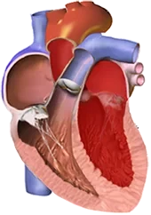
- Tâm thất bị quá tải áp lực (tăng hậu gánh)
- Tâm thất bơm máu chống lại áp lực cao hơn
- Xảy ra phì đại mà không giãn buồng thất
- Phì đại đồng tâm thất phải xảy ra khi có quá tải tâm thu của thất phải:
- Tăng áp động mạch phổi (bệnh phổi tắc nghẽn mạn tính)
- Thuyên tắc phổi
- Tứ chứng Fallot (bệnh tim bẩm sinh)
- Phì đại đồng tâm thất trái xảy ra khi có quá tải tâm thu của thất trái:
- Tăng huyết áp động mạch
- Hẹp van động mạch chủ
Phì đại lệch tâm thất phải
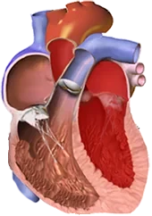
- Tâm thất bị quá tải thể tích (tăng tiền gánh)
- Trong thì tâm trương, nó bị đổ đầy máu quá mức
- Trong thì tâm thu, nó bơm một thể tích máu lớn hơn, đồng thời cũng chịu quá tải áp lực
- Xảy ra giãn và phì đại buồng thất
- Với quá tải thể tích mạn tính, chỉ xảy ra giãn
- Phì đại lệch tâm thất phải, do:
- Hở van động mạch phổi
- Phì đại lệch tâm thất trái, do:
- Hở van động mạch chủ
Vector thất chính và phì đại tâm thất
- Vector thất chính được quan sát tốt nhất ở
- Các chuyển đạo trước ngực (V1 và V6)
- Phì đại tâm thất được thấy trên điện tâm đồ
- Rõ nhất ở các chuyển đạo (V1 và V6)
- Phì đại thất trái (LVH)
- Vector tim xoay về phía phì đại thất trái
- Vì thất trái bị lớn ra (phì đại thất trái)
- Vector hướng gần như thẳng
- Về phía chuyển đạo V6
- Ra xa chuyển đạo V1
- Do đó, biên độ phức bộ QRS sẽ lớn hơn
- Vector tim xoay về phía phì đại thất trái
- Phì đại thất phải (RVH)
- Vector tim xoay về phía phì đại thất phải
- Vector nhỏ hơn, vì thất phải nhỏ hơn thất trái
- Vector hướng gần như thẳng
- Về phía chuyển đạo V1
- Ra xa chuyển đạo V6
- Biên độ QRS sẽ nhỏ hơn
Phì đại thất phải
- Điện tâm đồ không phân biệt được phì đại đồng tâm với phì đại lệch tâm
- Khối cơ tim của thất phải (kể cả khi có phì đại thất phải) vẫn nhỏ hơn khối cơ tim của thất trái
- Vector tim chính, kể cả khi có phì đại thất phải, không hướng thẳng về phía thất phải
- Do đó, các biến đổi trên điện tâm đồ trong phì đại thất phải là tối thiểu
- Điện tâm đồ chỉ có giá trị định hướng trong chẩn đoán phì đại thất phải
- Siêu âm tim được dùng để chẩn đoán phì đại
- Nguyên lý chẩn đoán phì đại thất phải trên điện tâm đồ là vector tim xoay:
- Về phía các chuyển đạo bên phải (aVR, III, V1-V2)
- Sóng R tăng lên
- Ra xa các chuyển đạo bên (I, aVL, V5-V6)
- Sóng R giảm đi
- Về phía các chuyển đạo bên phải (aVR, III, V1-V2)
Điện tâm đồ và phì đại thất phải
- Sóng R ưu thế ở V1 ≥ 7mm (tỉ lệ R/S ở V1 ≥ 1)
- Sóng R ở aVR > q (hoặc R > 5mm)
- Sóng S sâu ở V5/V6 ≥ 7mm
- Trục lệch phải > +110°
- Quá tải thất phải
- ST chênh xuống kiểu đi xuống và sóng T âm ở các chuyển đạo bên phải (V1-3)
- Thời gian đạt đỉnh sóng R ở V1 kéo dài ≥ 50ms
- Nếu có block nhánh phải (RBBB):
- RBBB + (R' ở V1 ≥ 15 mm)
- RBBB không hoàn toàn + (R' ở V1 ≥ 10 mm)
- Các biến đổi thứ phát trên điện tâm đồ:
- P pulmonale (phì đại nhĩ phải)
- Với quá tải huyết động của thất phải, nhĩ phải cũng bị quá tải
- P pulmonale (phì đại nhĩ phải)
Sóng R ưu thế ở V1
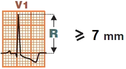
- Sóng R ưu thế ở V1 ≥ 7mm (tỉ lệ R/S ở V1 ≥ 1)
- Quá tải thất phải (V1-3)
- ST chênh xuống kiểu đi xuống
- Sóng T âm
Sóng S sâu ở V5/V6
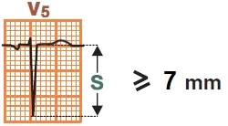
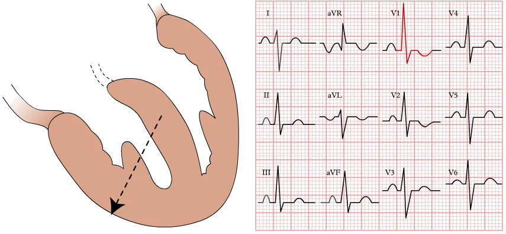
- Sóng S sâu ở V5/V6 ≥ 7mm
Phì đại thất phải
- Sóng R ưu thế ở V1 ≥ 7mm
- Sóng S sâu ở V5/V6 ≥ 7mm
- Trục lệch phải > +110°
- QRS âm ở các chuyển đạo I và aVL
- Quá tải thất phải
- Sóng T âm ở V1-2 mà không có ST chênh xuống
Quá tải thất phải và phì đại đồng tâm thất phải
Hình ảnh tăng gánh thất phải (right ventricular strain pattern)
- Gây ra bởi phì đại đồng tâm thất phải (quá tải áp lực)
- Không phải bởi phì đại lệch tâm thất phải (quá tải thể tích)
- Ở các chuyển đạo bên phải (V1-3), hiếm khi ở (II, III, aVF):
- ST chênh xuống kiểu đi xuống
- Sóng T âm
- Xảy ra do tái cực kéo dài
Nhồi máu thành dưới
- Các biến đổi tương tự trên điện tâm đồ so với phì đại thất phải cũng có thể gặp trong nhồi máu thành dưới (V1-3):
- Sóng R ưu thế ở V1 ≥ 7mm (tỉ lệ R/S ở V1 ≥ 1)
- ST chênh xuống nằm ngang
- Sóng T dương (phì đại thất phải có sóng T âm)
- Trong nhồi máu thành dưới, hầu như luôn có kèm theo nhồi máu thành dưới (ST chênh lên ở II, III, aVF)
- Vì thành sau và thành dưới có nguồn cấp máu chung qua các nhánh của động mạch vành phải
Phì đại thất phải
- Sóng R ưu thế ở V1 ≥ 7mm
- Sóng S sâu ở V5/V6 ≥ 7mm
- Trục lệch phải > +110°
- QRS âm ở các chuyển đạo I và aVL
- Quá tải thất phải (V1-3, III)
- ST chênh xuống kiểu đi xuống
- Sóng T âm
Phì đại thất phải
- Sóng R ưu thế ở V1 ≥ 7mm
- Sóng S sâu ở V5/V6 ≥ 7mm
- Trục lệch phải > +110°
- QRS âm ở các chuyển đạo I và aVL
- Quá tải thất phải (V1-3)
- ST chênh xuống kiểu đi xuống
- Sóng T âm
Phì đại thất phải
- Sóng R ưu thế ở V1 ≥ 7mm
- Sóng S sâu ở V5/V6 ≥ 7mm
- Trục lệch phải > +110°
- QRS âm ở các chuyển đạo I và aVL
- Quá tải thất phải (V1-3)
- ST chênh xuống kiểu đi xuống
- Sóng T âm
- P pulmonale
- Chiều cao sóng P ở II > 2,5mm
Phì đại thất phải và block nhánh phải
- Block nhánh phải không hoàn toàn:
- RsR´ ở V1
- Thời gian QRS < 0,12s
- RBBB không hoàn toàn với R´ ở V1 ≥ 10 mm
- Trục lệch phải > +110°
- QRS âm ở các chuyển đạo I và aVL
- Quá tải thất phải (V1-3) và (II, III, aVF)
- ST chênh xuống kiểu đi xuống
- Sóng T âm
- P pulmonale
- Chiều cao sóng P ở II > 2,5mm
Phì đại thất phải và loạn sản thất phải gây loạn nhịp
- Tỉ lệ R/S ở V1 ≥ 1
- Trục lệch phải > +110°
- Quá tải thất phải (V1-3) và (II, III, aVF)
- Đoạn ST đi xuống
- Sóng T âm
- P pulmonale
- Chiều cao sóng P ở II > 2,5mm
- Loạn sản thất phải gây loạn nhịp (ARVD)
- Sóng Epsilon (ở tất cả các chuyển đạo trên điện tâm đồ)
Phì đại hai thất (hiện tượng Katz–Wachtel) — ECG
Phì đại hai thất (biventricular hypertrophy)
Vector thất chính và phì đại tâm thất
- Vector thất chính được quan sát tốt nhất ở
- Các chuyển đạo trước ngực (V1 và V6)
- Phì đại tâm thất biểu hiện rõ trên điện tâm đồ
- Thấy rõ nhất ở các chuyển đạo (V1 và V6)
- Phì đại thất trái (LVH)
- Vector tim xoay về phía phì đại thất trái
- Vì thất trái bị lớn ra
- Vector hướng gần như thẳng
- Về phía chuyển đạo V6
- Ra xa chuyển đạo V1
- Do đó tạo ra biên độ phức bộ QRS lớn hơn
- Vector tim xoay về phía phì đại thất trái
- Phì đại thất phải (RVH)
- Vector tim xoay về phía phì đại thất phải
- Vector nhỏ hơn vì thất phải nhỏ hơn thất trái
- Vector hướng gần như thẳng
- Về phía chuyển đạo V1
- Ra xa chuyển đạo V6
- Biên độ QRS sẽ nhỏ hơn
Điện tâm đồ và phì đại thất trái
- Điện tâm đồ không phân biệt được
- Phì đại đồng tâm với phì đại lệch tâm
- Dấu hiệu điện tâm đồ chủ yếu của phì đại thất trái (LVH) là:
- Chỉ số Sokolow:
- S(V1/2) + R(V5/6) ≥ 35mm
- Là tiêu chuẩn điện tâm đồ được dùng phổ biến nhất
- Chỉ số Sokolow:
Điện tâm đồ và phì đại thất phải
- Điện tâm đồ không phân biệt được
- Phì đại đồng tâm với phì đại lệch tâm
- Dấu hiệu điện tâm đồ chủ yếu của phì đại thất phải (RVH) là:
- Sóng R ưu thế (V1) ≥ 7mm (tỉ lệ R/S (V1) ≥ 1)
Điện tâm đồ và phì đại hai thất
- Độ nhạy của điện tâm đồ trong chẩn đoán phì đại hai thất là rất thấp
- Trên điện tâm đồ có phì đại của thất trái hoặc thất phải
- Và các dấu hiệu điện tâm đồ bổ sung (những dấu hiệu không có trong phì đại một thất)
- Hiện tượng Katz–Wachtel
- Có các phức bộ QRS hai pha lớn (sóng R cao và sóng S sâu) ở V2-V5
- Đây là dấu hiệu điển hình của phì đại hai thất
- Điện tâm đồ và phì đại thất trái:
- Các dấu hiệu của phì đại thất phải đi kèm gồm:
- Trục lệch phải
- P pulmonale
- Hiện tượng Katz–Wachtel
- Sóng S sâu (V5-V6)
- Các dấu hiệu của phì đại thất phải đi kèm gồm:
- Điện tâm đồ và phì đại thất phải:
- Các dấu hiệu của phì đại thất trái đi kèm gồm:
- Biên độ QRS > 50mm
- Hiện tượng Katz–Wachtel
- Các dấu hiệu của phì đại thất trái đi kèm gồm:
Phì đại hai thất
- Phì đại thất trái
- Tiêu chuẩn điện thế dương tính: (V2(S) + V5(R) = 35 mm, aVL(R) > 11 mm)
- Thất trái bị quá tải (sóng T âm ở V4-V6)
- Hiện tượng Katz–Wachtel
- Các phức bộ QRS hai pha lớn (V2-V5)
- Sóng S sâu (V5-V6)
- Chỉ điểm có phì đại thất phải đi kèm
Phì đại hai thất
- Hiện tượng Katz–Wachtel
- Các phức bộ QRS hai pha lớn (V2-V5)
- QRS khổng lồ > 50mm (V2)
- P pulmonale
Phì đại hai thất
- Đây là điện tâm đồ của một trẻ có thông liên thất
- Nhịp nhanh xoang
- Hiện tượng Katz–Wachtel
- Các phức bộ QRS hai pha lớn (V2-V5)
- QRS khổng lồ > 50mm (V2)
- Trục lệch phải
Nguồn tài liệu (Sources)
Nguồn: ECGBOOK — www.ecgbook.com
- ECG from Basics to Essentials Step by Step
- litfl.com
- ecgwaves.com
- metealpaslan.com
- medmastery.com
- uptodate.com
- ecgpedia.org
- wikipedia.org
- Strong Medicine
- Understanding Pacemakers